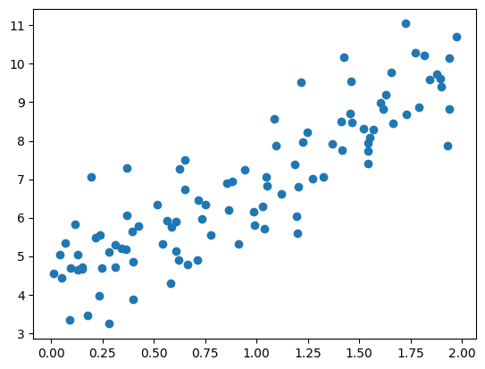
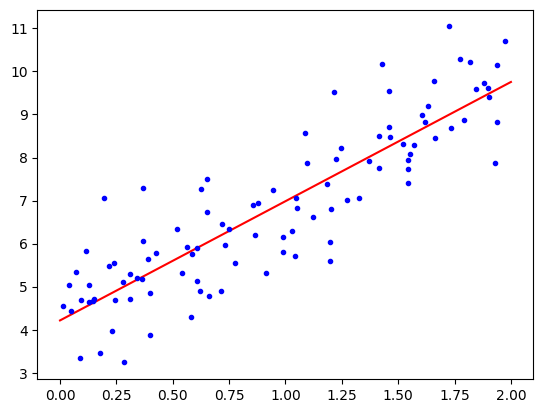
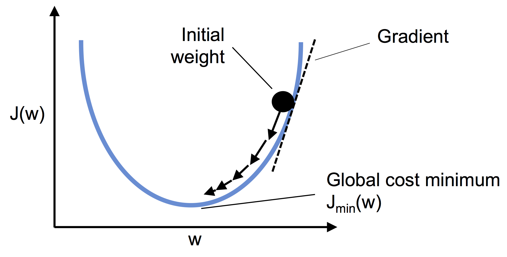
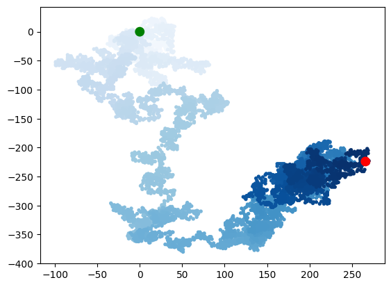
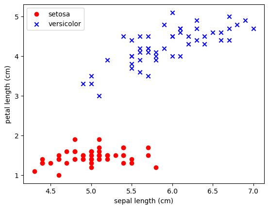
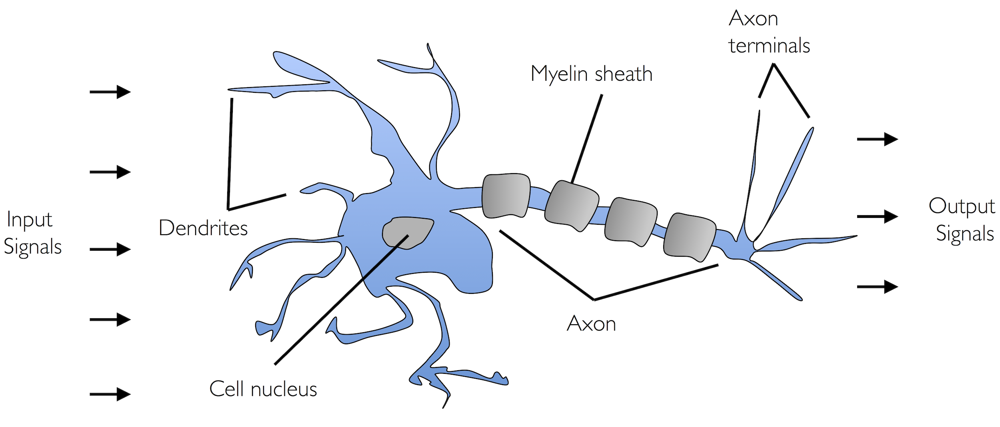
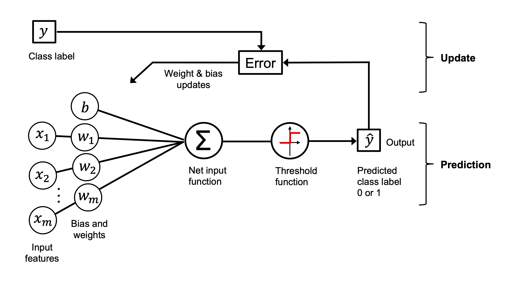
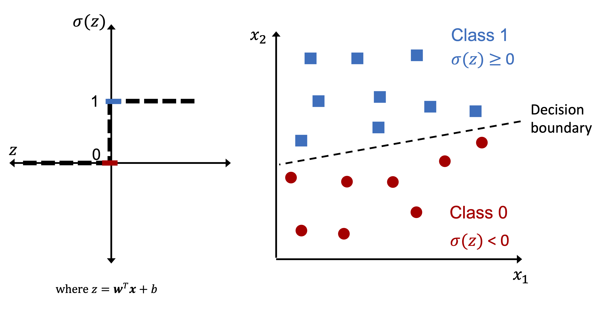
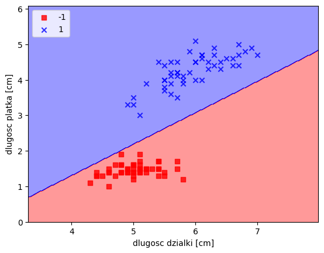

import numpy as np
import pandas as pd
from sklearn.model_selection import train_test_splitprzypomnienie - dane ustruktyryzowane
df = pd.read_csv("titanic.csv")df.head()| pclass | survived | name | sex | age | sibsp | parch | ticket | fare | cabin | embarked | boat | body | home.dest | |
|---|---|---|---|---|---|---|---|---|---|---|---|---|---|---|
| 0 | 1 | 1 | Allen, Miss. Elisabeth Walton | female | 29.0000 | 0 | 0 | 24160 | 211.3375 | B5 | S | 2 | NaN | St Louis, MO |
| 1 | 1 | 1 | Allison, Master. Hudson Trevor | male | 0.9167 | 1 | 2 | 113781 | 151.5500 | C22 C26 | S | 11 | NaN | Montreal, PQ / Chesterville, ON |
| 2 | 1 | 0 | Allison, Miss. Helen Loraine | female | 2.0000 | 1 | 2 | 113781 | 151.5500 | C22 C26 | S | NaN | NaN | Montreal, PQ / Chesterville, ON |
| 3 | 1 | 0 | Allison, Mr. Hudson Joshua Creighton | male | 30.0000 | 1 | 2 | 113781 | 151.5500 | C22 C26 | S | NaN | 135.0 | Montreal, PQ / Chesterville, ON |
| 4 | 1 | 0 | Allison, Mrs. Hudson J C (Bessie Waldo Daniels) | female | 25.0000 | 1 | 2 | 113781 | 151.5500 | C22 C26 | S | NaN | NaN | Montreal, PQ / Chesterville, ON |
numeric_features = ['age', 'fare']
categorical_features = ['pclass', 'sex', 'embarked']X = df[numeric_features + categorical_features].copy()
y = df['survived'].astype(int) # Cel: czy przeżył (0 lub 1)X['useless_column'] = 'Taka Sama Wartosc'
categorical_features.append('useless_column')X.head()| age | fare | pclass | sex | embarked | useless_column | |
|---|---|---|---|---|---|---|
| 0 | 29.0000 | 211.3375 | 1 | female | S | Taka Sama Wartosc |
| 1 | 0.9167 | 151.5500 | 1 | male | S | Taka Sama Wartosc |
| 2 | 2.0000 | 151.5500 | 1 | female | S | Taka Sama Wartosc |
| 3 | 30.0000 | 151.5500 | 1 | male | S | Taka Sama Wartosc |
| 4 | 25.0000 | 151.5500 | 1 | female | S | Taka Sama Wartosc |
X_tr, X_test, y_tr, y_test = train_test_split(X, y, test_size=0.2, random_state=42)X_tr.info()<class 'pandas.core.frame.DataFrame'>
Index: 1047 entries, 772 to 1126
Data columns (total 6 columns):
# Column Non-Null Count Dtype
--- ------ -------------- -----
0 age 840 non-null float64
1 fare 1046 non-null float64
2 pclass 1047 non-null int64
3 sex 1047 non-null object
4 embarked 1046 non-null object
5 useless_column 1047 non-null object
dtypes: float64(2), int64(1), object(3)
memory usage: 57.3+ KBfrom sklearn.pipeline import Pipeline
from sklearn.compose import ColumnTransformer
from sklearn.preprocessing import StandardScaler, OneHotEncoder
from sklearn.impute import SimpleImputer
from sklearn.linear_model import LogisticRegression
from sklearn.ensemble import RandomForestClassifier
from sklearn.base import BaseEstimator, TransformerMixin, ClassifierMixinclass DelOneValueFeature(BaseEstimator, TransformerMixin):
def __init__(self):
self.one_value_features = []
def fit(self, X, y=None):
if not isinstance(X, pd.DataFrame):
X = pd.DataFrame(X)
self.one_value_features = [col for col in X.columns if X[col].nunique() == 1]
return self
def transform(self, X, y=None):
if not isinstance(X, pd.DataFrame):
X = pd.DataFrame(X)
if not self.one_value_features:
return X
return X.drop(columns=self.one_value_features)class RandomClassifier(BaseEstimator, ClassifierMixin):
def __init__(self, random_state=None):
self.random_state = random_state
self.classes_ = None
def fit(self, X, y):
# Zapamiętujemy unikalne klasy z wektora docelowego
self.classes_ = np.unique(y)
return self
def predict(self, X):
np.random.seed(self.random_state)
# Losujemy klasy dla każdego wiersza w X
return np.random.choice(self.classes_, size=len(X))
def predict_proba(self, X):
np.random.seed(self.random_state)
# Losujemy prawdopodobieństwa, które sumują się do 1
raw_probs = np.random.rand(len(X), len(self.classes_))
return raw_probs / raw_probs.sum(axis=1, keepdims=True)numeric_transformer = Pipeline(steps=[
("imputer", SimpleImputer(strategy="mean")),
("scaler", StandardScaler())
])categorical_transformer = Pipeline(steps=[
("remover", DelOneValueFeature()), # Usunie 'useless_column' przed OneHotEncoderem!
("imputer", SimpleImputer(strategy="most_frequent")),
("encoder", OneHotEncoder(handle_unknown="ignore", sparse_output=False))
])preprocessor = ColumnTransformer(transformers=[
("num_trans", numeric_transformer, numeric_features),
("cat_trans", categorical_transformer, categorical_features)
])full_pipeline = Pipeline(steps=[
("preproc", preprocessor),
("model", LogisticRegression())
])param_grid = [
# Siatka 1: Random Forest
{
"preproc__num_trans__imputer__strategy": ["mean", "median"],
"model": [RandomForestClassifier(random_state=42)],
"model__n_estimators": [10, 50, 100],
"model__max_depth": [None, 5, 10]
},
# Siatka 2: Logistic Regression
{
"preproc__num_trans__imputer__strategy": ["mean", "median"],
"model": [LogisticRegression(max_iter=1000)],
"model__C": [0.1, 1.0, 10.0]
},
{
"model": [RandomClassifier(random_state=42)]
}
]from sklearn.model_selection import GridSearchCVgrid_search = GridSearchCV(full_pipeline, param_grid, cv=3, verbose=1, n_jobs=-1)grid_search.fit(X_tr, y_tr)Fitting 3 folds for each of 25 candidates, totalling 75 fitsGridSearchCV(cv=3,
estimator=Pipeline(steps=[('preproc',
ColumnTransformer(transformers=[('num_trans',
Pipeline(steps=[('imputer',
SimpleImputer()),
('scaler',
StandardScaler())]),
['age',
'fare']),
('cat_trans',
Pipeline(steps=[('imputer',
SimpleImputer(strategy='most_frequent')),
('encoder',
OneHotEncoder(handle_unknown='ignore',
sparse_output=False))]),
['pcla...
param_grid=[{'model': [RandomForestClassifier(random_state=42)],
'model__max_depth': [None, 5, 10],
'model__n_estimators': [10, 50, 100],
'preproc__num_trans__imputer__strategy': ['mean',
'median']},
{'model': [LogisticRegression(max_iter=1000)],
'model__C': [0.1, 1.0, 10.0],
'preproc__num_trans__imputer__strategy': ['mean',
'median']},
{'model': [RandomClassifier(random_state=42)]}],
verbose=1)In a Jupyter environment, please rerun this cell to show the HTML representation or trust the notebook. On GitHub, the HTML representation is unable to render, please try loading this page with nbviewer.org.
GridSearchCV(cv=3,
estimator=Pipeline(steps=[('preproc',
ColumnTransformer(transformers=[('num_trans',
Pipeline(steps=[('imputer',
SimpleImputer()),
('scaler',
StandardScaler())]),
['age',
'fare']),
('cat_trans',
Pipeline(steps=[('imputer',
SimpleImputer(strategy='most_frequent')),
('encoder',
OneHotEncoder(handle_unknown='ignore',
sparse_output=False))]),
['pcla...
param_grid=[{'model': [RandomForestClassifier(random_state=42)],
'model__max_depth': [None, 5, 10],
'model__n_estimators': [10, 50, 100],
'preproc__num_trans__imputer__strategy': ['mean',
'median']},
{'model': [LogisticRegression(max_iter=1000)],
'model__C': [0.1, 1.0, 10.0],
'preproc__num_trans__imputer__strategy': ['mean',
'median']},
{'model': [RandomClassifier(random_state=42)]}],
verbose=1)Pipeline(steps=[('preproc',
ColumnTransformer(transformers=[('num_trans',
Pipeline(steps=[('imputer',
SimpleImputer()),
('scaler',
StandardScaler())]),
['age', 'fare']),
('cat_trans',
Pipeline(steps=[('imputer',
SimpleImputer(strategy='most_frequent')),
('encoder',
OneHotEncoder(handle_unknown='ignore',
sparse_output=False))]),
['pclass', 'sex', 'embarked',
'useless_column'])])),
('model',
RandomForestClassifier(max_depth=5, random_state=42))])ColumnTransformer(transformers=[('num_trans',
Pipeline(steps=[('imputer', SimpleImputer()),
('scaler', StandardScaler())]),
['age', 'fare']),
('cat_trans',
Pipeline(steps=[('imputer',
SimpleImputer(strategy='most_frequent')),
('encoder',
OneHotEncoder(handle_unknown='ignore',
sparse_output=False))]),
['pclass', 'sex', 'embarked',
'useless_column'])])['age', 'fare']
SimpleImputer()
StandardScaler()
['pclass', 'sex', 'embarked', 'useless_column']
SimpleImputer(strategy='most_frequent')
OneHotEncoder(handle_unknown='ignore', sparse_output=False)
RandomForestClassifier(max_depth=5, random_state=42)
print("\n" + "="*40)
print("NAJLEPSZE PARAMETRY:")
print("="*40)
for param, val in grid_search.best_params_.items():
print(f"{param}: {val}")
# Wynik na zbiorze testowym dla najlepszego modelu
best_model_score = grid_search.score(X_test, y_test)
========================================
NAJLEPSZE PARAMETRY:
========================================
model: RandomForestClassifier(random_state=42)
model__max_depth: 5
model__n_estimators: 100
preproc__num_trans__imputer__strategy: meanbest_model_score0.7633587786259542print("\n" + "="*40)
print("NAJLEPSZE PARAMETRY:")
print("="*40)
for param, val in grid_search.best_params_.items():
print(f"{param}: {val}")
# Wynik na zbiorze testowym dla najlepszego modelu
best_model_score = grid_search.score(X_test, y_test)
# Sprawdźmy jak poradziłby sobie sam model losowy dla porównania
random_baseline = RandomClassifier(random_state=42)
random_baseline.fit(X_tr, y_tr)
random_score = random_baseline.score(X_test, y_test)
print("\n" + "="*40)
print("PORÓWNANIE DOKŁADNOŚCI (ACCURACY):")
print("="*40)
print(f"Nasz najlepszy model z GridSearch: {best_model_score:.4f}")
print(f"Model stricte losowy (Baseline): {random_score:.4f}")
========================================
NAJLEPSZE PARAMETRY:
========================================
model: RandomForestClassifier(random_state=42)
model__max_depth: 5
model__n_estimators: 100
preproc__num_trans__imputer__strategy: mean
========================================
PORÓWNANIE DOKŁADNOŚCI (ACCURACY):
========================================
Nasz najlepszy model z GridSearch: 0.7634
Model stricte losowy (Baseline): 0.4847Na poprzednich zajęciach omawialiśmy wykorzystanie modelu regresji liniowej dla danych ustrukturyzowanych. W najprostszym przypadku dla jednej zmiennej X i jednej zmiennej celu moglibyśmy np. przypisać model w postaci:
satysfakcja_z_zycia = \(\alpha_0\) + \(\alpha_1\) PKB_per_capita
\(\alpha_0\) nazywamy punktem odcięcia (intercept) albo punktem obciążenia (bias)
import numpy as np
np.random.seed(42)
m = 100
X = 2*np.random.rand(m,1)
a_0, a_1 = 4, 3
y = a_0 + a_1 * X + np.random.randn(m,1)import matplotlib.pyplot as plt
plt.scatter(X, y)
plt.show()
W ogólności model liniowy: \(\hat{y} = \alpha_0 + \alpha_1 x_1 + \alpha_2 x_2 + \dots + \alpha_n x_n\) gdzie \(\hat{y}\) to predykcja naszego modelu (wartość prognozowana), dla \(n\) cech przy wartościach cechy \(x_i\).
W postaci zwektoryzowanej możemy napisać: \(\hat{y} = \vec{\alpha}^{T} \vec{x}\)
W tej postaci widać dlaczego w tym modelu dokłada się kolumnę jedynek - wynikają one z wartości \(x_0\) dla \(\alpha_0\).
# dodajmy jedynkę do naszej tabeli
from sklearn.preprocessing import add_dummy_feature
X_b = add_dummy_feature(X)Powiedzieliśmy, że możemy w tym modelu znaleźć funkcję kosztu
\(MSE(\vec{x}, \hat{y}) = \sum_{i=1}^{m} \left( \vec{\alpha}^{T} \vec{x}^{(i)} - y^{(i)} \right)^{2}\)
Tak naprawdę możemy \(MSE(\vec{x}, \hat{y}) = MSE(\vec{\alpha})\)
Rozwiązanie analityczne: \(\vec{\alpha} = (X^{T}X)^{-1} X^T y\)
alpha_best = np.linalg.inv(X_b.T @ X_b) @ X_b.T @ yalpha_best, np.array([4,3])(array([[4.21509616],
[2.77011339]]),
array([4, 3]))X_new = np.array([[0],[2]])X_new_b = add_dummy_feature(X_new)y_predict = X_new_b @ alpha_bestimport matplotlib.pyplot as plt
plt.plot(X_new, y_predict, "r-", label="prediction")
plt.plot(X,y, "b.")
plt.show()
from sklearn.linear_model import LinearRegression
lin_reg = LinearRegression()
lin_reg.fit(X,y)
print(f"a_0={lin_reg.intercept_[0]}, a_1 = {lin_reg.coef_[0][0]}")
print("predykcja", lin_reg.predict(X_new))a_0=4.215096157546747, a_1 = 2.7701133864384837
predykcja [[4.21509616]
[9.75532293]]# Logistic Regression w scikit learn oparta jest o metodę lstsq
alpha_best_svd, _, _, _ = np.linalg.lstsq(X_b, y, rcond=1e-6)
alpha_best_svdarray([[4.21509616],
[2.77011339]])Gradient prosty
Pamiętaj o standaryzacji zmiennych (aby były one reprezentowane w tej samej skali).
Wsadowy gradient prosty
W celu implementacji musimy policzyć pochodne cząstkowe dla funkcji kosztu wobec każdego parametru \(\alpha_i\).
\(\frac{\partial}{\partial \alpha_j}MSE(\vec{x}, \hat{y}) = 2 \sum_{i=1}^{m} \left( \vec{\alpha}^{T} \vec{x}^{(i)} - y^{(i)} \right) x_j^{(i)}\)
Komputery posiadają własność mnożenia macierzy co pozwala obliczyć nam wszystkie pochodne w jednym obliczeniu. Wzór i algorytm liczący wszystkie pochodne “na raz” wykorzystuje cały zbiór X dlatego też nazywamy go wsadowym.
Po obliczeniu gradientu po prostu idziemy “w przeciwną stronę”
$ {next} = - {} MSE()$
from IPython.display import ImageImage(filename='02_10.png', width=500)
eta = 0.1
n_epochs = 1000
m = len(X_b)
np.random.seed(42)
alpha = np.random.randn(2,1) # losowo wybieramy rozwiązanie
print(f"alpha init {alpha}")
for epoch in range(n_epochs):
gradients = 2/m* X_b.T @ (X_b @ alpha - y)
#print(alpha)
alpha = alpha - eta*gradientsalpha init [[ 0.49671415]
[-0.1382643 ]]alphaarray([[4.21509616],
[2.77011339]])Stochastic gradient descent
Jednym z poważniejszych problemów wsadowego gradientu jest jego zależność od wykorzystania (w każdym kroku) całej macierzy danych. Korzystając z własności statystycznych możemy zobaczyć jak będzie realizowała się zbieżność rozwiązania jeśli za każdym razem wylosujemy próbkę danych i na niej określimy gradient. Ze względu, iż w pamięci przechowujemy tylko pewną porcję danych algorytm ten może być używany dla bardzo dużych zbiorów danych. Warto jednak mieć świadomość, że tak otrzymane wyniki mają charakter chaotyczny, co oznacza, że funkcja kosztu nie zbiega się w kierunku minimum lecz przeskakuje dążąc do minimun w sensie średniej.
n_epochs = 50
m = len(X_b)
def learning_schedule(t, t0=5, t1=50):
return t0/(t+t1)
np.random.seed(42)
alpha = np.random.randn(2,1)
for epoch in range(n_epochs):
for iteration in range(m):
random_index = np.random.randint(m)
xi = X_b[random_index : random_index + 1]
yi = y[random_index : random_index + 1]
gradients = 2 * xi.T @ (xi @ alpha - yi)
eta = learning_schedule(epoch * m + iteration)
alpha = alpha - eta * gradientsalphaarray([[4.21076011],
[2.74856079]])from sklearn.linear_model import SGDRegressor
sgd_reg = SGDRegressor(max_iter=1000, tol=1e-5,
penalty=None, eta0=0.01,
n_iter_no_change=100, random_state=42)
sgd_reg.fit(X, y.ravel())SGDRegressor(n_iter_no_change=100, penalty=None, random_state=42, tol=1e-05)In a Jupyter environment, please rerun this cell to show the HTML representation or trust the notebook.
On GitHub, the HTML representation is unable to render, please try loading this page with nbviewer.org.
SGDRegressor(n_iter_no_change=100, penalty=None, random_state=42, tol=1e-05)
sgd_reg.intercept_, sgd_reg.coef_(array([4.21278812]), array([2.77270267]))from random import randint
randint(1,6)5from random import randint
class Kosc():
""" opis """
def __init__(self, sciany=6):
"""
to jest metoda do uruchamiania podczas inicjalizacji obiektu
params:
sciany (int)
"""
self.sciany = sciany
def roll(self):
""" opis"""
return randint(1, self.sciany)a = Kosc(sciany=12)
[a.roll() for _ in range(10)][6, 12, 7, 1, 3, 1, 1, 2, 3, 5]from random import choice
choice([0,1,2,3,4])0from random import choice
class RandomWalk():
def __init__(self, num_points=5000):
self.num_points = num_points
self.x_values = [0]
self.y_values = [0]
def fill_walk(self):
while len(self.x_values) < self.num_points:
# ruch prawo-lewo
# wylosuj kierunek dodatni lub ujemy oraz odległość 0-5 i przypisz do zmiennych
x_direction = choice([-1,1])
x_distance = choice([0,1,2,3,4])
x_step = x_direction*x_distance
y_direction = choice([-1,1])
y_distance = choice([0,1,2,3,4])
y_step = y_direction*y_distance
# napisz warunek pomijający krok gdy x i y step = 0 (użyj continue)
if x_step == 0 and y_step == 0:
continue
next_x = self.x_values[-1] + x_step
next_y = self.y_values[-1] + y_step
self.x_values.append(next_x)
self.y_values.append(next_y)rw = RandomWalk(10000)
rw.fill_walk()
rw.x_values[:5][0, 4, 4, 8, 10]import matplotlib.pyplot as plt
point_number = list(range(rw.num_points))
plt.scatter(rw.x_values, rw.y_values, c=point_number, cmap=plt.cm.Blues,
edgecolor='none', s=15)
plt.scatter(0,0,c='green', edgecolor='none', s=100)
plt.scatter(rw.x_values[-1], rw.y_values[-1],c='red', edgecolor='none', s=100)
plt.show()
import numpy as np
import pandas as pd
from sklearn.datasets import load_iris
iris = load_iris()
df = pd.DataFrame(data= np.c_[iris['data'], iris['target']],
columns= iris['feature_names'] + ['target'])X = df.iloc[:100,[0,2]].values
y = df.iloc[0:100,4].values
y = np.where(y == 0, -1, 1)
import matplotlib.pyplot as pltplt.scatter(X[:50,0],X[:50,1],color='red', marker='o',label='setosa')
plt.scatter(X[50:100,0],X[50:100,1],color='blue', marker='x',label='versicolor')
plt.xlabel('sepal length (cm)')
plt.ylabel('petal length (cm)')
plt.legend(loc='upper left')
plt.show()
dziecko = Perceptron() dziecko.fit()
dziecko musi mieć parametr uczenia
dziecko.eta
możemy sprawdzić jak szybko się uczy == ile błędów robi
dziecko.errors_
rozwiązania znajdą się w wagach
dziecko.w_ # w naszym przypadku dziecko uczy się dwóch wag !
Image(filename='02_01.png', width=800) 
Image(filename='02_04.png', width=800)
Image(filename='02_02.png', width=800) 
class Perceptron():
def __init__(self, n_iter=10, eta=0.01):
self.n_iter = n_iter
self.eta = eta
def fit(self, X, y):
self.w_ = np.zeros(1+X.shape[1])
self.errors_ = []
for _ in range(self.n_iter):
pass
return selfimport random
class Perceptron():
def __init__(self, eta=0.01, n_iter=10):
self.eta = eta
self.n_iter = n_iter
def fit(self, X, y):
#self.w_ = np.zeros(1+X.shape[1])
self.w_ = [random.uniform(-1.0, 1.0) for _ in range(1+X.shape[1])]
self.errors_ = []
for _ in range(self.n_iter):
errors = 0
for xi, target in zip(X,y):
#print(xi, target)
update = self.eta*(target-self.predict(xi))
#print(update)
self.w_[1:] += update*xi
self.w_[0] += update
#print(self.w_)
errors += int(update != 0.0)
self.errors_.append(errors)
return self
def net_input(self, X):
return np.dot(X, self.w_[1:])+self.w_[0]
def predict(self, X):
return np.where(self.net_input(X)>=0.0, 1, -1)ppn = Perceptron()
ppn.fit(X,y)<__main__.Perceptron at 0xffff501b1990>print(ppn.errors_)
print(ppn.w_)[2, 3, 2, 3, 1, 0, 0, 0, 0, 0]
[np.float64(0.8281724951930811), np.float64(-0.3278624665243334), np.float64(0.3708385651137017)]ppn.predict(np.array([-3, 5]))array(1)from matplotlib.colors import ListedColormap
def plot_decision_regions(X,y,classifier, resolution=0.02):
markers = ('s','x','o','^','v')
colors = ('red','blue','lightgreen','gray','cyan')
cmap = ListedColormap(colors[:len(np.unique(y))])
x1_min, x1_max = X[:,0].min() - 1, X[:,0].max()+1
x2_min, x2_max = X[:,1].min() -1, X[:,1].max()+1
xx1, xx2 = np.meshgrid(np.arange(x1_min, x1_max, resolution),
np.arange(x2_min, x2_max, resolution))
Z = classifier.predict(np.array([xx1.ravel(), xx2.ravel()]).T)
Z = Z.reshape(xx1.shape)
plt.contourf(xx1, xx2, Z, alpha=0.4, cmap=cmap)
plt.xlim(xx1.min(), xx1.max())
plt.ylim(xx2.min(),xx2.max())
for idx, cl in enumerate(np.unique(y)):
plt.scatter(x=X[y == cl,0], y=X[y==cl,1], alpha=0.8, color=cmap(idx), marker=markers[idx], label=cl)plot_decision_regions(X,y,classifier=ppn)
plt.xlabel("dlugosc dzialki [cm]")
plt.ylabel("dlugosc platka [cm]")
plt.legend(loc='upper left')
plt.show()